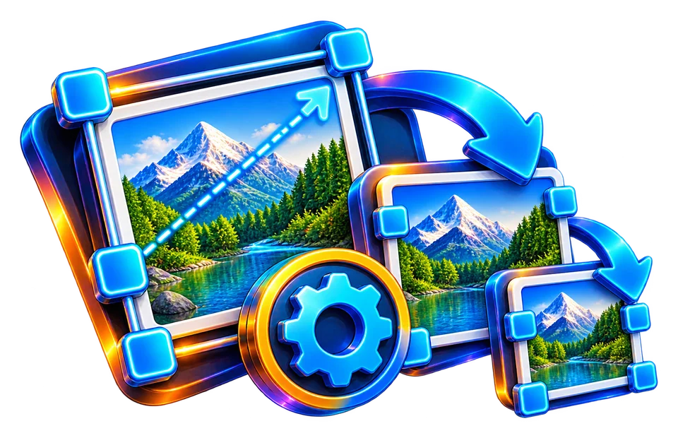

Select the images to resize together
Resize a portrait and a landscape image together, checking whether each retains intended proportions.
Resize multiple images and download them together as ZIP.
Batch resizing must respect each source image's dimensions and orientation.

Resize a portrait and a landscape image together, checking whether each retains intended proportions.
Create matching-size assets from several images.
Mixed aspect ratios may need individual crop decisions.
Resize a portrait and a landscape image together, checking whether each retains intended proportions.
A portrait 800×1200 and landscape 1200×800 need different target widths if both should fit in the same bounding box without distortion. Preserve proportions rather than forcing identical aspect ratios.
Use the real tool above to verify the result. The example illustrates the workflow, not a guaranteed outcome.
A portrait 800×1200 and landscape 1200×800 need different target widths if both should fit in the same bounding box without distortion. Preserve proportions rather than forcing identical aspect ratios.
Resizing down discards pixels. Enlarging a small source generally cannot provide the detail of a higher-resolution original.
A batch image resizer changes pixel dimensions for multiple pictures, often with one set of target width or height rules. For a website gallery, resizing five 4000-pixel-wide photographs to a maximum width of 1200 pixels can reduce processing and download costs while maintaining enough detail for ordinary display. The output dimensions depend on aspect ratio if proportional resizing is enabled; a portrait photo may end up much taller than it is wide. A common maximum width does not mean every image becomes the same rectangle.
If the tool preserves aspect ratio, scaling a 1200×800 source to 600 pixels wide should give 600×400. Forcing it to 600×600 without crop or letterboxing changes the image's shape. Before processing, decide whether the destination requires fixed dimensions or only a size limit. Product galleries sometimes demand a consistent canvas; in that case cropping or adding margins is a separate editorial decision. Do not assume a resizer will automatically center and pad every subject.
Enlarging a 200×200 thumbnail to 800×800 produces more pixels but not new original detail. Interpolation creates estimates, so small text may remain blurry. For photographs, always prefer resizing from the highest-quality suitable original. Downscaling can remove fine texture, and selecting a lossy output format can add compression artifacts; inspect both effects after export. Transparent PNG illustrations need special attention if a batch workflow changes them to JPEG, because transparent areas cannot survive that format unchanged.
In a mixed batch, files may have orientation metadata that affects the displayed result. A phone portrait stored with an EXIF rotation flag can behave differently from a physically rotated PNG. Compare a few representative landscape and portrait samples after processing. If the ZIP includes a file with unexpected dimensions, inspect its original orientation and whether the requested target size was interpreted as width, height or a maximum bound.
Open the generated ZIP and count its entries against the files selected. Extract at least one small, one large and one transparent image. Confirm that the output width and height follow the chosen rule and that filenames remain usable. If an upload platform has both pixel and byte limits, batch resize may solve only the pixel constraint; follow with appropriate compression if needed. Keep originals safe so the batch can be repeated for a different platform without cumulative quality loss.
A product feed may require an image to fit within a maximum dimension, while another marketplace expects a specific square canvas. Resizing a 1600×1000 source to fit within 800×800 without stretching typically gives 800×500; it does not become an 800×800 square. A separate padding or crop operation is required for that geometric target. Document the feed specification and verify a representative exported item before reprocessing an entire catalog of photographs.
A batch containing a portrait 900×1200 and a landscape 1200×900 should not be forced into the same width and height unless intentional distortion or crop is part of the task. With proportions preserved and a target width of 600, their heights differ: 800 for the portrait and 450 for the landscape. Inspect the actual dimensions of files inside the downloaded ZIP, because a successful archive download does not prove every individual resize was correct. For product images that need uniform square thumbnails, crop or pad deliberately rather than stretching subjects. Keep filenames distinguishable to avoid replacing originals accidentally.
If a catalog demands a consistent 600×600 display tile, mixed input photographs need a deliberate fit policy. Contain mode leaves whitespace around a tall object, cover mode crops edges, and stretching distorts proportions. Those are three different product-photo presentations. Before committing to a batch, apply the preferred policy to both a very wide sample and a very tall sample and inspect the output archive for size and framing consistency.
Only if aspect-ratio preservation is applied for each file.
Aspect-ratio preservation may require different scaled widths and heights to stay inside the same bounding box.
Their source aspect ratios differ. Preserving proportions naturally produces different heights.
Only by cropping or padding as needed; direct independent width/height scaling can stretch content.